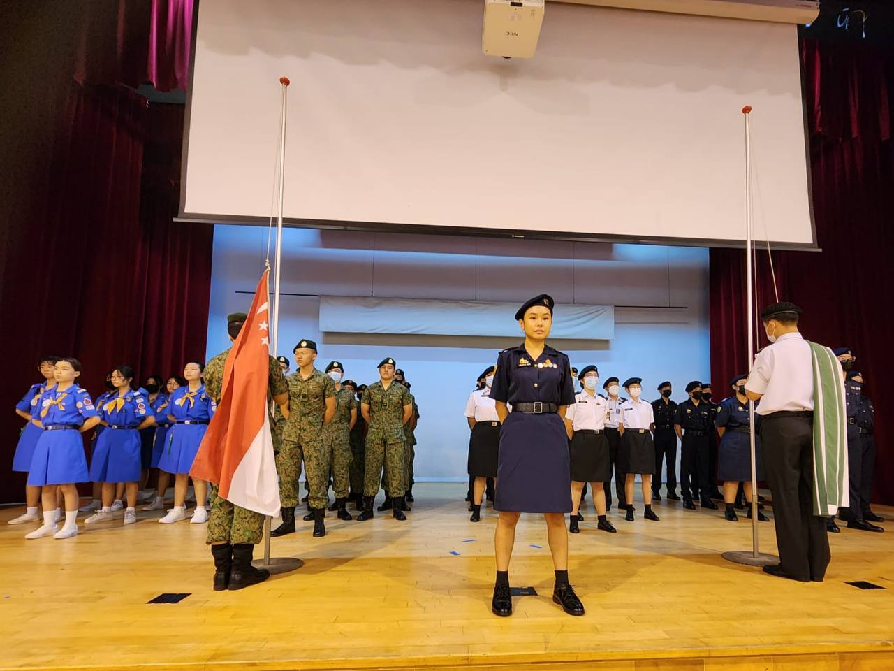
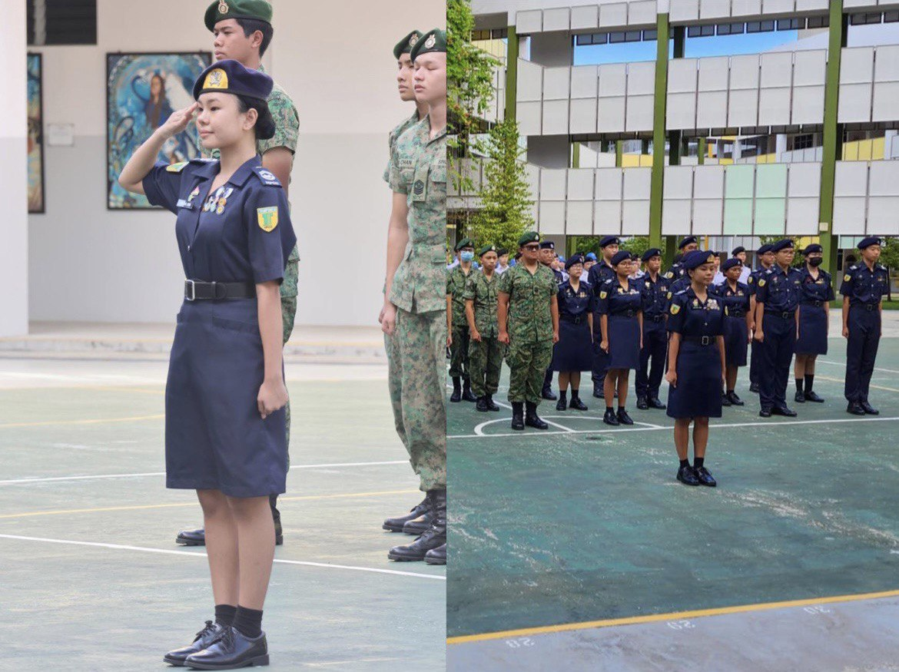
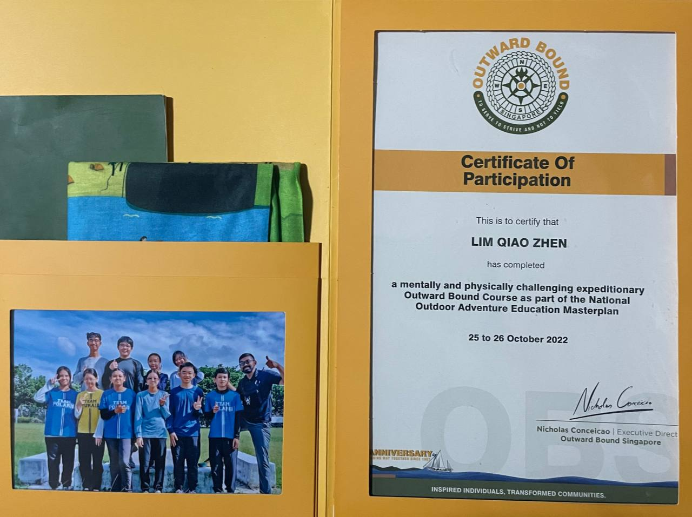
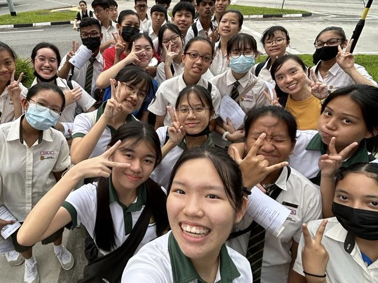
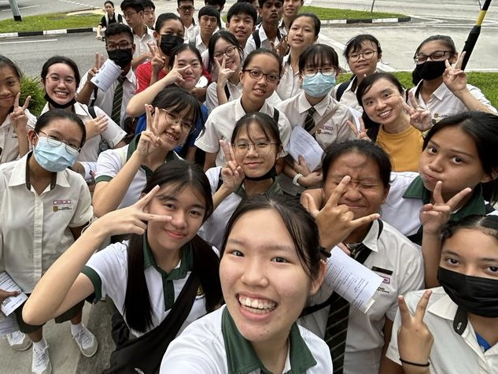

In ALP my project focused on programming
a microbit to help the elderly to count
down on the number of reps of exercise they
have left. As elderly often exercise to stay
fit, having a counter will ensure they will not
lose track of the number of reps left
In ALP we learnt about using alternative
energy to create sustainable driving habits.
We assembled a solar car kit and had a better
understanding on how solar can harness to
replace traditional fuel combustion.
In Secondary 4, the cohort did Flag Day for our
Values-in-Action project where we went to Our
Tampines Hub collecting donations for "Caregiving
welfare association" that supports caregivers
who are struggling financially.



Parade Commander for Total Defence Day
Guard-Of-Honor Commander for Speech Day
Outward Bound Singapore
I was appointed as the Parade Commander for
Total Defence Day mini parade (2023). Since
it was my first time commanding a parade, I
was rather nervous given the few number of
rehearsals. However it is important that I stay
resilient and I overcame the challenge by
practicing in my own time.
I volunteered to be the Guard-Of-Honor
Parade Commander for the Speech Day's
Uniform Group Parade (2023). I was thrilled
as this is my first parade that showcased the
all the members of the Uniform Groups.
I completed the Outward Bounds Singapore
Camp (2022) together with my cohortmates.
I learnt to get out of my comfort zone and
made friends with people I was unfamiliar with.
The most challenging part for me was the
trekking activity which tested my perseverance.

 
